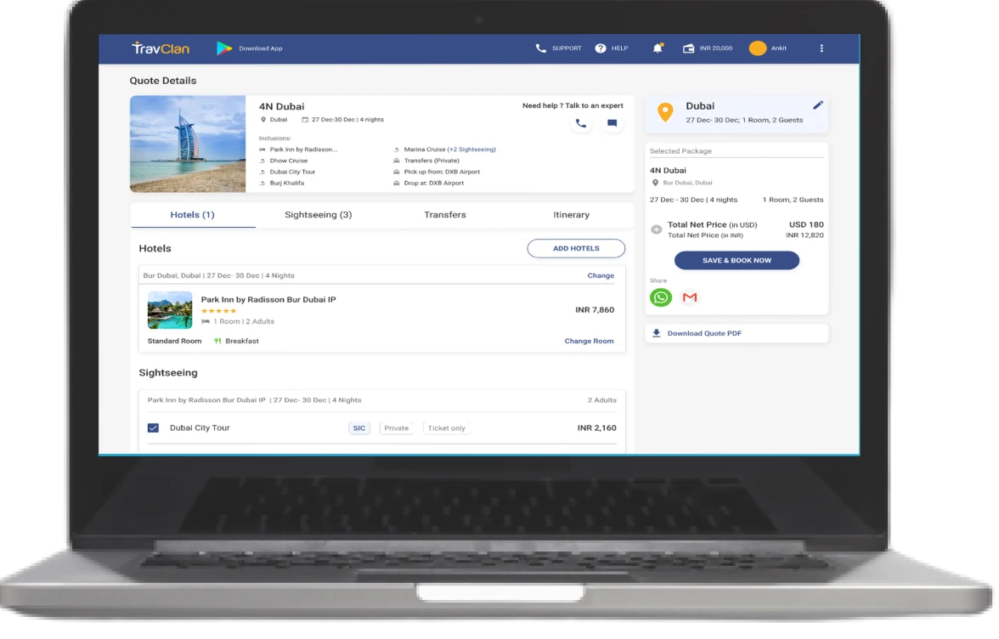

Small edits took hours
Agents had to wait for revised quotes even when customers requested minor changes.
TravClan · B2B travel platform
A redesigned quote-building experience that helps travel agents configure hotels, sightseeing, transfers and itineraries in one connected workflow.
Overview
The challenge
Travel agents needed to tailor holiday packages around each customer. Without an online customization flow, even small changes moved through slow, manual conversations.
The goal was to bring that work into the product: let agents change the major parts of a trip, understand the impact of their choices and move toward booking with more confidence.
I owned the design work end to end, gathering feedback throughout the process and translating it into a build-ready interface.

Design question How might we make a multi-part quote flexible without making it feel complicated?
Research
What I heard
I interviewed travel agents and internal team members who supported the offline process, then mapped the journey from initial request to a bookable package.
Agents had to wait for revised quotes even when customers requested minor changes.
Options arrived through disconnected conversations, making confident decisions harder.
The amount of information and the offline process created a steep learning curve.
Agents struggled to keep customers informed while several package parts changed at once.
Approach
From signal to system
Interview agents and internal teams, then map where requests, approvals and hand-offs slowed the quote down.
Compare component-first customization with editing the itinerary day by day.
Consolidate the strongest interaction patterns into a detailed interface and validate the flow iteratively.
Design
A pivotal decision
Agents were already accustomed to thinking in hotels, sightseeing, transfers and itineraries. Testing showed that preserving this mental model reduced the complexity of editing a quote.
Direction A Component-first
SelectedAgents can edit each package component and then review the generated itinerary. This matched their existing behavior and made changes easier to locate.
Direction B Day-by-day
Day-level editing offered precision, but testing showed that its granularity made the overall flow feel more complex.
Core flow
Supporting screens explored the transition from the overall package into focused hotel, room and sightseeing decisions.
Final interface
The final direction keeps the summary visible while focused overlays help agents change one part of the package at a time.
A structured quote view connects hotels, activities, transfers, itinerary and pricing.
Filters and a persistent summary support faster hotel decisions.
Room details, inclusions and price remain visible at the decision point.
The selected list and running total make package changes easier to understand.
Learning
What I took forward
The strongest direction did not introduce a completely new way of planning a trip. It made the agents’ existing component-based workflow visible, connected and easier to control.
The project reinforced the value of early feedback, progressive detail and balancing customization with cognitive load.